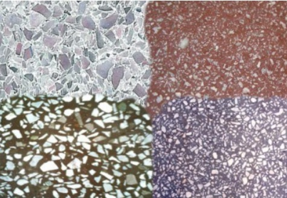
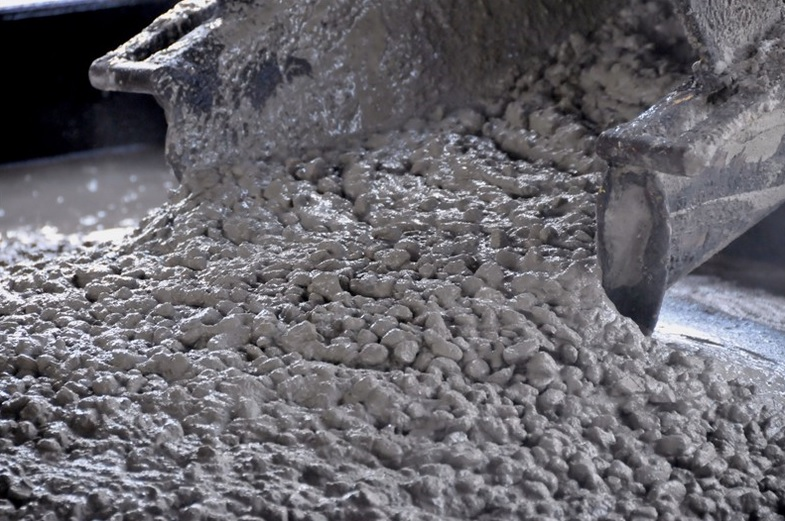
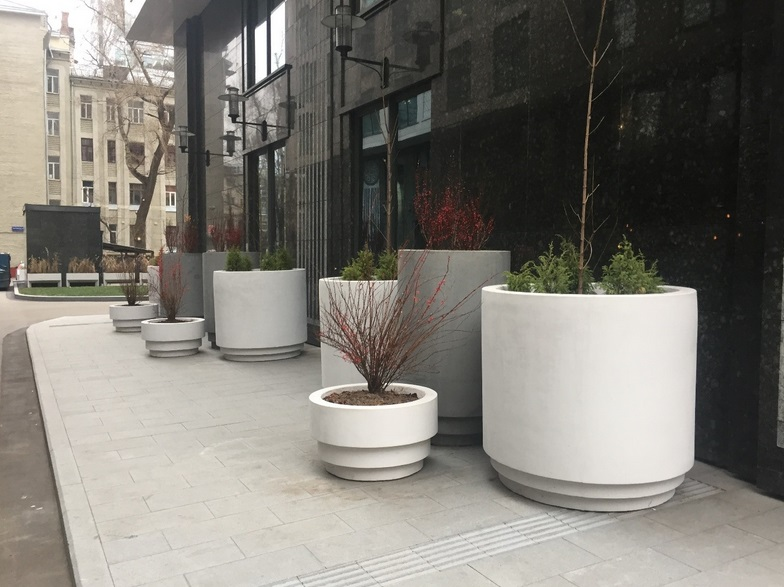
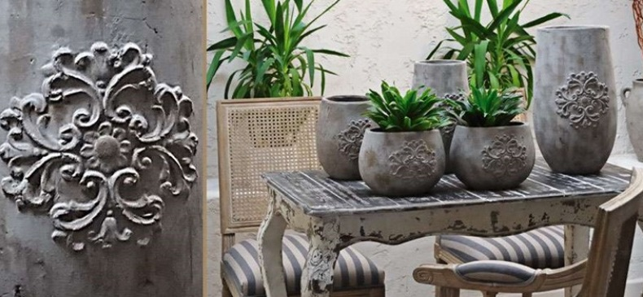
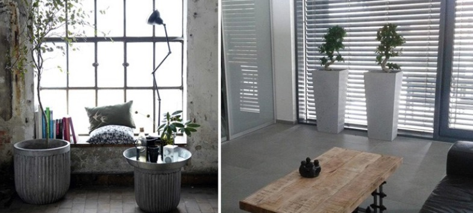
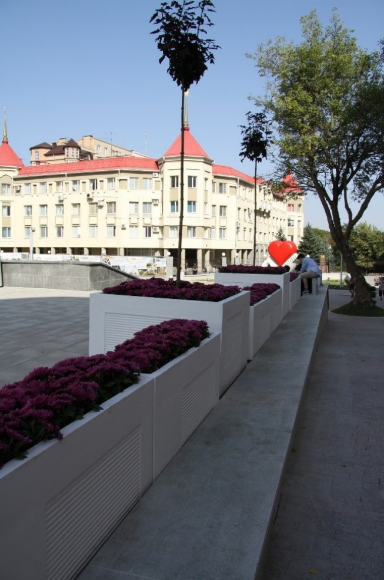
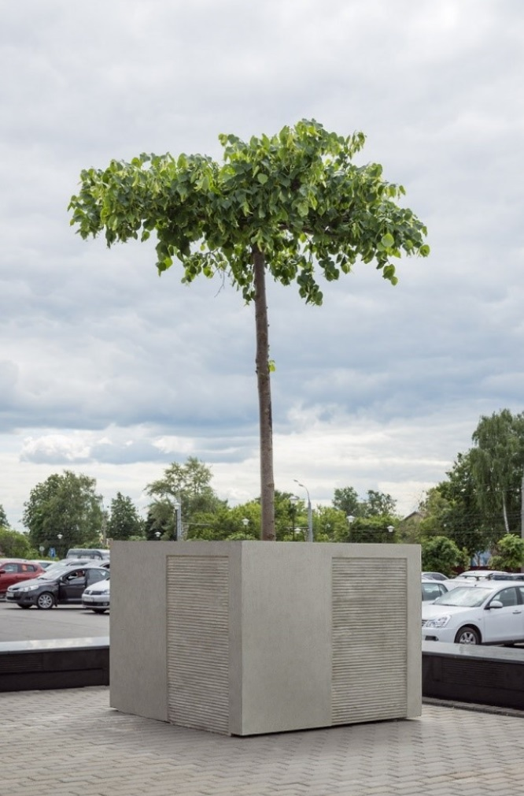
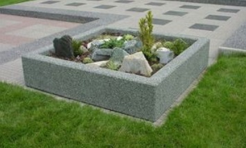
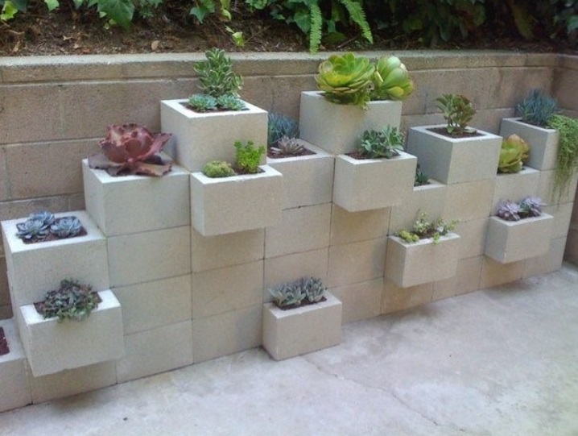
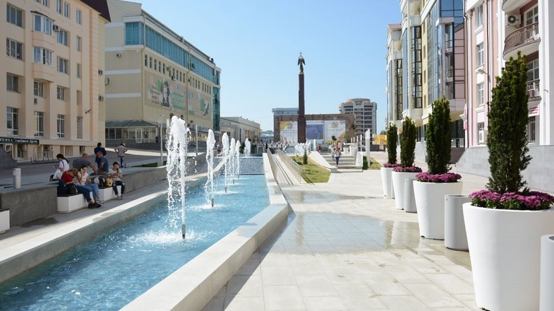

Бетонные вазоны уже долгое время остаются одним из главных элементов садового и паркового дизайна. Промышленность выпускает подобные изделия и из других материалов – пластика, металла, древесины, но все они проигрывают по одному или нескольким показателям. Используют их как в общественных парках, так и в частных усадьбах, что же касается разнообразия моделей, то оно огромно и дает возможность подобрать подходящий вазон под любые исходные условия.

Для изготовления данной продукции может применяться как обычный бетон, сделанный на основе цемента марки М-500 и чистого речного песка, так и смесь с добавлением каменной крошки. Она делает фактуру изделия более интересной и необычной. Еще один прием, помогающий изменить декоративные характеристики вазона – это введение специального красителя, оттенок его подбирается исходя из пожеланий заказчика и особенностей оформления того места, где он будет установлен.

Высокая популярность бетонных вазонов на протяжении многих лет имеет под собой весомые основания — ни один другой материал не обладает таким набором достоинств. В числе их преимуществ следующие качества:
Из недостатков бетона заслуживают внимания всего лишь два – невысокая стойкость к ударным нагрузкам и внушительная масса изделий. Впрочем, это не мешает широко использовать их в озеленении парков и скверов, а также загородных коттеджей. Проблема с массивностью изделий решается достаточно просто – место установки продумывают и определяют заранее, с тем, чтобы избежать ненужных перемещений.
Еще пару десятков лет назад дизайн бетонных вазонов был довольно однообразен и малопривлекателен. Сегодня положение дел изменилось кардинально, и встретить их можно буквально везде – в городских парках, садах частных домов, и даже в помещениях – в общественных учреждениях, домашней обстановке. Сегодня мода на установку бетонных вазонов дома становится все более распространенной, их применяют в следующих местах:
Что же касается размещения в помещениях и цветниках, то наиболее распространены симметричные модели, которые размещают по центру цветника или таким образом, чтобы иметь к ним доступ со всех сторон. Кроме этого, востребованы и угловые вазоны, они хорошо вписываются в интерьер и позволяют занять труднодоступные места помещения и расставить акценты в интерьере.



Учитывая способность бетонных вазонов создавать идеальные условия для роста и развития многих декоративных культур, можно сказать, что эти сооружения являются универсальными. Единственным ограничением для их использования может служить индивидуальная особенность растения в части ограничения роста корневой системы. Надо сказать, что таких культур достаточно мало, и список растений, которые будут отлично выглядеть в бетонных вазонах для цветов, несравнимо больше. К ним относятся хвойные и суккуленты, летники и луковичные, комнатные цветы и многолетние растения. Главное здесь – грамотно подобрать сочетание, если задумывается создание миниатюрного цветника, а также тщательно соблюдать агротехнику при уходе. Ограниченный объем почвы делает последний пункт особенно важным, так как любое отступление от режима полива или рыхления может стать причиной гибели растения.


Различают несколько разновидностей изделий, в зависимости от места их установки:
Стоит выделить и категорию комнатных вазонов, которая также подразделяется на несколько видов в зависимости от места установки и особенностей конструкции.



В компании «БетКам» Вы можете заказать изготовление бетонных вазонов по индивидуальному эскизу или выбрать изделия из имеющихся в каталоге.